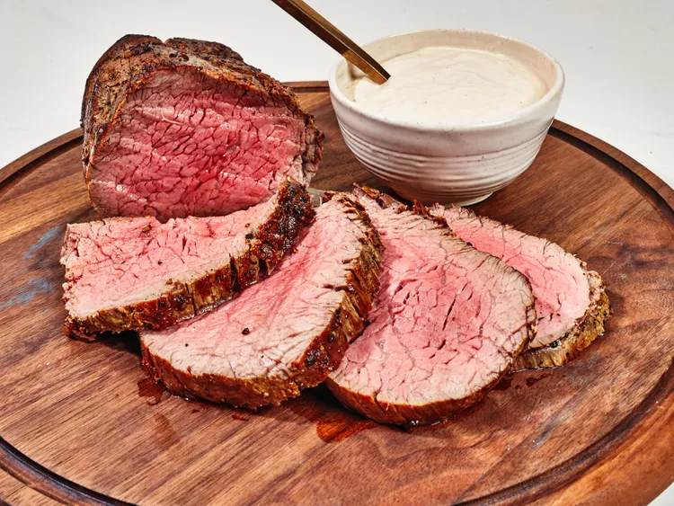

Easy Roasted Beef Tenderloin

Description
This easy roasted beef tenderloin takes less time to make than prime rib,
and is an impressive centerpiece for your holiday table.
Ingredients
- butcher's twine
- 1 (3 pound) beef tenderloin
- 1 tablespoon kosher salt
- 2 teaspoons freshly ground black pepper
- 2 tablespoons olive oil
Steps
-
Cut butcher’s twine into 5 or 6 (8-inch) pieces. Wrap each piece firmly
around the tenderloin, spaced about 1 1/2 inches apart, and secure with
a knot. Trim off any excess twine. Cut a longer piece of twine and wrap
it horizontally around the beef; run the ends of the twine under the
center pieces and tie a firm knot in the center. Trim off any excess.
Refrigerate tenderloin for 30 minutes uncovered.
-
Preheat the oven to 325 degrees F (165 degrees C). Set a wire rack
inside a rimmed baking sheet.
-
Season tenderloin evenly with salt and pepper. Heat oil in a large
skillet over medium-high heat. Place meat in skillet and cook,
undisturbed, until browned, 4 to 5 minutes. Flip and repeat on all sides
until evenly browned. Transfer tenderloin to the prepared wire rack.
-
Bake in the preheated oven until an instant read thermometer inserted
near the center reaches 125 degrees F (52 degrees C), 35 to 40 minutes
for medium rare, or cook to desired degree of doneness. Transfer to a
cutting board to rest for 10 to 15 minutes before slicing.